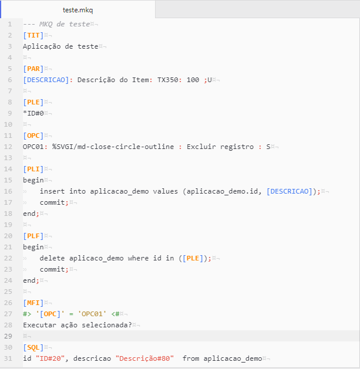

MKQ
Arquivo do tipo MakeQuery composto por um conjunto de ferramentas formado por TAG’s, comandos e parâmetros.
Criando uma aplicação
Vamos criar uma aplicação simples, mas com relevante poder. Poderemos inserir dados através de uma tela de parâmetros, visualizá-los em um grid e fazer a exclusão de registros. Ela conterá as TAG's: TIT, PAR, OPC, PLE, PLI, PLF, MFI e SQL.
Requisitos
Para nossa aplicação funcionar, precisaremos de uma tabela simples no banco de dados com:
- duas colunas:
IDeDESCRICAO; - uma
SEQUENCEpara oID; - uma
CONSTRAINTdo tipoUNIQUEparaDESCRICAO.
Caso utilize o banco de dados Oracle e, assim prefira, copie o código abaixo:
create table aplicacao_demo (id number, descricao varchar2(100), constraint aplicacao_demo_uk unique (descricao));
create sequence aplicacao_demo.id nocache;
Código do MKQ
Obs: por boa prática, recomenda-se utilizar a primeira linha de código como comentário.
Vamos começar separando o nosso MKQ em três blocos: bloco geral, bloco de adição e bloco de exclusão, delimitados por << >>.
Vamos começar o código do bloco geral com a TAG TIT, definindo o título da nossa aplicação no:
<< Bloco geral
##>'[$OPCAO$]' like '%$OPCAO$%'<##
[TIT]
Aplicação teste
>>
Antes de criarmos a tela de parâmetros, vamos criar o nosso grid com a TAG SQL. Recomenda-se deixá-la em último lugar no código (dentro do bloco, neste caso), mas na criação é, geralmente, a primeira TAG a ser escrito.
<< Bloco geral
##>'[$OPCAO$]' like '%$OPCAO$%'<##
[TIT]
Aplicação teste
[SQL]
select id "ID#20", descricao "Descrição#80" from aplicacao_demo
>>
Com isso, devemos obter o resultado abaixo:
Como iremos utilizar a TAG OPC, precisamos da TAG PLE:
<< Bloco geral
##>'[$OPCAO$]' like '%$OPCAO$%'<##
[TIT]
Aplicação teste
[PLE]
*ID#20
[SQL]
select id "ID#20", descricao "Descrição#80" from aplicacao_demo
>>
Vamos adicionar o botão de exclusão com a TAG OPC:
<< Bloco geral
##>'[$OPCAO$]' like '%$OPCAO$%'<##
[TIT]
Aplicação teste
[PLE]
*ID#20
[OPC]
ADD: %SVGI/md-add-circle-outline : Adicionar registro : S
DEL: %SVGI/md-close-circle-outline : Excluir registro : S
[SQL]
select id "ID#20", descricao "Descrição#80" from aplicacao_demo
>>
Vamos criar nossa tela de parâmetros:
[PAR]
[DESCRICAO]: Descrição do Item: TX350: 100 ;U
Adicionando o primeiro bloco de PL/SQL com a TAG PLI, que será responsável pela inserção de dados na tabela.SQL:
[PLI]
begin
insert into aplicacao_demo values (aplicacao_demo.id, [DESCRICAO]);
commit;
end;
Adicionaremos o bloco de PL/SQL através da TAG PLF, que fará a exclusão dos dados da tabela.
[PLF]
begin
delete aplicaco_demo where id in ([PLE]);
commit;
end;
Por fim, colocaremos uma mensagem para solicitar a confirmação antes da exclusão dos dados.
[MFI]
#> '[OPC]' = 'OPC01' <#
Executar ação selecionada?
<< Bloco de primeiro nível - Adição
##>'[$OPCAO$]' = 'ADD'<##
>>
<< Bloco de primeiro nível - Exclusão
'[$OPCAO$]' = 'DEL'<##
>>
O resultado deve ficar como na imagem abaixo:

Seu aplicação com inserção e exclusão de dados está criada! Em poucos minutos podemos atingir o resultado